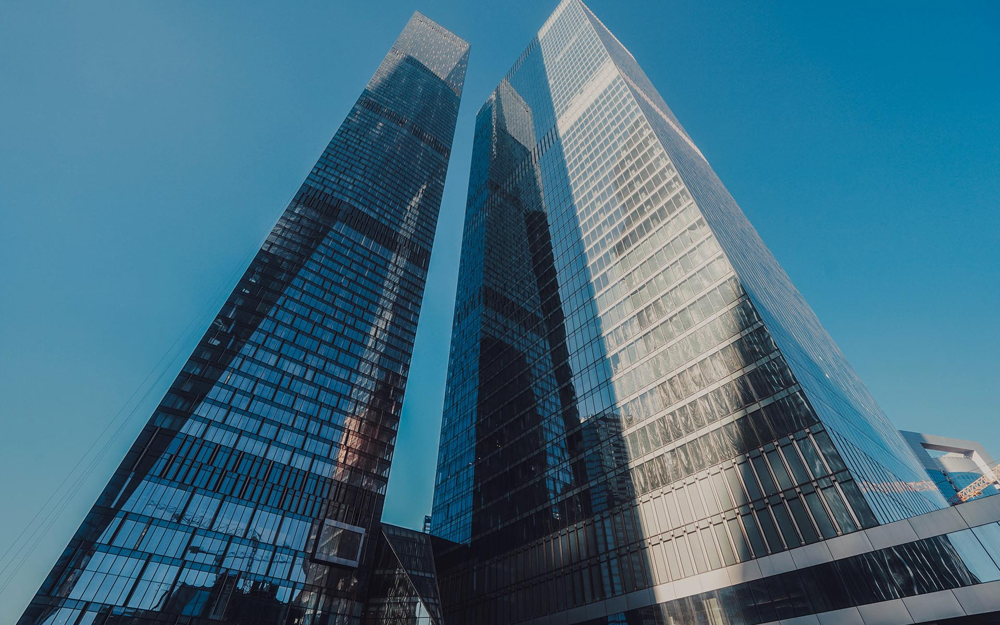

Башня ОКО
Скульптурная композиция, парящая в небе

Характеристики
- Высота (Южная башня):354 м
- Высота (Северная башня):249 м
- Высота (Паркинг):44 м
- Годы строительства:2011-2016
- Девелопер:Capital Group
- Застройщик:ООО «Ресурс Строй»
- Общая площадь:249 000 м²
- Скорость лифтов:6 м/с
- Этажей (Южная башня):85
- Этажей (Северная башня):49
- Этажей (Паркинг):14
- Количество машино-мест:3 740
- Апартаменты:122 507 м²
- Участок:16
Об архитектуре
Скульптурная композиция из двух независимых башен объединена прозрачным шестиэтажным стилобатом. Фасад этой общественной части здания разбит на треугольные плоскости, образующие «кристаллический объем». Скошенные грани и рельефные углубления фасадов, тандем бетона и стекла создают визуальный эффект бесконечности и изящности — комплекс будто парит, устремляется в небо, восхищая легкостью конструкции.
Дополнительную элегантность, легкость и изящество силуэта обоим башням обеспечивают рельефные углубления — «соты» по периметру фасадов. Уникальное архитектурное решение по расположению башен по диагонали и использованию в них мультифункционального просветленного стекла. Прозрачное стекло с бледно-голубым оттенком обрамлено витражом из анодированного алюминия натурального цвета.
Башня ОКО — это не просто небоскреб, а настоящий вертикальный город. Здесь расположены элитные апартаменты, офисы класса А, рестораны с панорамным видом и одна из самых высоких смотровых площадок Европы. Комплекс стал одним из символов современной Москвы и гордостью Москва-Сити.
Как добраться
📍 Адрес: 1-й Красногвардейский пр., 21, стр. 2, Москва
🚇 Метро: Выставочная, Международная, Деловой центр